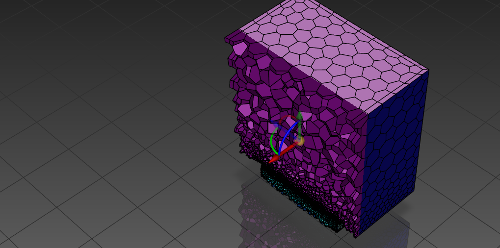
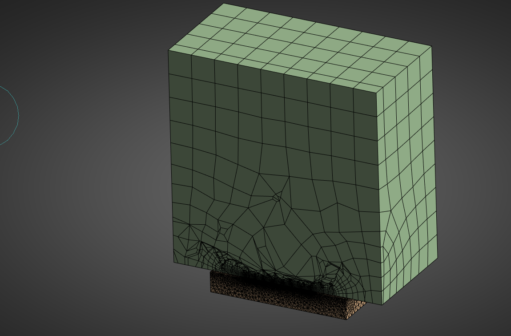
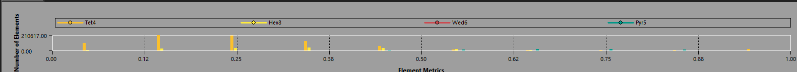
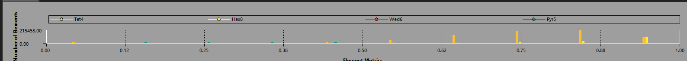
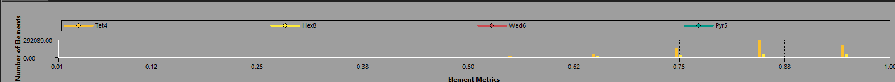
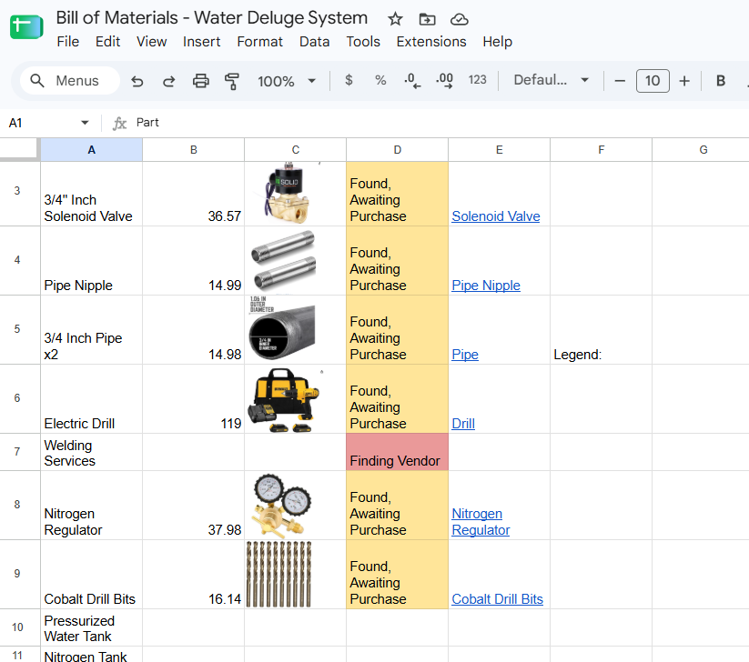

Water Deluge System
A small-scale water deluge system modeled on the SpaceX Starship flame deflector. The work covers the plate design in Inventor, meshing in Ansys and a costed bill of materials for an instrumented ground test.
Deluge plate

Meshing: two approaches
The first mesh was polyhedral. The second is a hybrid mesh of ~1M cells, with a hex core and tetrahedral refinement at the orifice plate. Before committing to a solve, I checked it against element quality, orthogonal quality and skewness.


Mesh quality checks
Histograms of the hybrid mesh by element type (Tet4, Hex8, Wed6, Pyr5). Skewness clusters low (good) and the quality metrics cluster high (good).



Ground test bill of materials
The instrumented test needs a solenoid valve, a nitrogen regulator and tank, a pressurized water tank and 3/4" piping. Each line item has its vendor and cost tracked.
